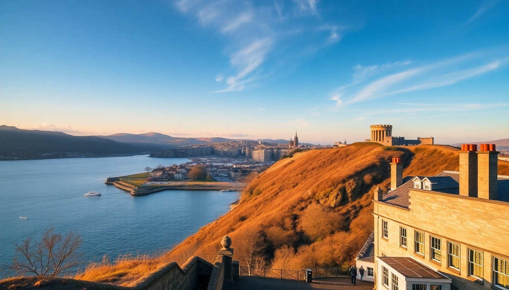

7-Day UK Trip: London, Edinburgh & the Highlands Route

I spent a week bouncing between London, Edinburgh, and the Highlands by train, and I’ll be blunt: you can’t see everything. But you can see the best of each without burning out. This itinerary is built around direct train lines, one rental car day, and a few meals I still think about. Here’s exactly how I’d do it again.
Why combine London, Edinburgh, and the Highlands in one week?
Because the train does the heavy lifting. London to Edinburgh is a 4.5-hour LNER ride from King’s Cross — comfortable, with a café car and power outlets. From Edinburgh, you can shoot north to Inverness in another 3.5 hours, then loop west to Fort William. The key is not trying to add Bath, York, or the Lake District. Stick to this spine: city energy, then castle-and-loch decompression.
- London for museums, markets, and pub culture
- Edinburgh for Old Town grit and Arthur’s Seat views
- Inverness as a Highlands base with decent food
- Fort William for Glen Nevis and the Jacobite train
What’s the best way to get between London and Edinburgh?
LNER trains from King’s Cross to Edinburgh Waverley. Book advance singles on the LNER website or app — they’re half the price of walk-up fares. I paid £42 for a 7:40 AM departure. Avoid the Caledonian Sleeper unless you’re a heavy sleeper; I tried it once and got zero rest.
- Train time: 4 hours 20 minutes (non-stop)
- Best seat: Coach K, window on the left side for coastal views past Berwick-upon-Tweed
- Luggage tip: Store big bags in the overhead racks near the ends of carriages — the middle racks fill fast
- Alternative: Fly British Airways from Heathrow to Edinburgh if you’re short on time, but factor in airport transfers
Where should I stay in London for three nights?
I based myself near South Kensington because the tube connections to Paddington (for Heathrow Express) and King’s Cross (for Edinburgh) are direct. The Amba Hotel Grosvenor is a solid mid-range pick — clean, quiet rooms, and a 5-minute walk to Victoria Station if you’re arriving from Gatwick. For something cheaper, the YHA London Central on Bolsover Street has private rooms and a rooftop view of the BT Tower.
- Neighborhoods that work: South Kensington (museums, quiet), Covent Garden (lively, central), King’s Cross (convenient for trains)
- What I’d skip: Staying near Oxford Street — it’s chaos and the hotels are overpriced
- Breakfast spot: The Wolseley on Piccadilly for eggs Benedict in a wood-paneled room
What can I actually see in London in two full days?
Day one: walk the South Bank from Tower Bridge to the London Eye. Stop at Borough Market for a chorizo roll from Brindisa (expect a queue, it’s worth it). Then cross the Millennium Bridge to St. Paul’s — don’t pay to go inside; the view from the steps is free. Day two: hit the British Museum for the Rosetta Stone and the Parthenon marbles (free entry, but book a timed slot online). Afternoon: wander through Soho and grab a pint at the Lamb & Flag on Rose Street.
- Free stuff that’s good: National Gallery, Tate Modern, Sky Garden (book weeks ahead)
- Paid stuff worth the money: Tower of London tour with a Beefeater guide
- Overrated: London Eye (long queue, worse view than the Sky Garden)
- Dinner pick: Dishoom in Covent Garden for black daal and bacon naan — go at 5 PM to skip the line
How do I spend one day in Edinburgh without rushing?
From Waverley Station, walk up the Royal Mile to Edinburgh Castle. Book castle tickets online for 9 AM to miss the crowds. By noon, you’ll be done. Then climb Arthur’s Seat — it’s a 45-minute hike from Holyrood Park, and the view over the Firth of Forth is the best in the city. Afternoon: explore Grassmarket for pubs. I had a fantastic fish and chips at The White Hart Inn, one of the oldest pubs in town.
- Lunch spot: The Devil’s Advocate on Advocate’s Close — haggis bonbons and a solid whisky list
- Pub with a view: The Bow Bar on Victoria Street, for real ale without tourist prices
- What to skip: The Scotch Whisky Experience on the Royal Mile — it’s a theme park, not a distillery
- Overnight: Stayed at The Scholar near the Meadows — clean, modern, and a 15-minute walk to the station
Is Inverness worth visiting, or just a pit stop?
Inverness is a pit stop, but a pleasant one. The city center is small — you can walk the river Ness in 20 minutes. The real draw is Loch Ness and the surrounding glens. I booked a half-day tour with Discover Scotland Tours that took us to Urquhart Castle ruins and a boat cruise on the loch. The water is murky and cold, and no, I didn’t see the monster. But the drive through Glen Affric was stunning.
- Where to eat: The Mustard Seed on the riverfront — roast pork belly and sticky toffee pudding
- Where to stay: The Royal Highland Hotel near the station — basic but clean, and they hold luggage after checkout
- Don’t bother: The Loch Ness Centre in Drumnadrochit — it’s a gift shop with a few screens
- Day trip add-on: Culloden Battlefield, 15 minutes by bus — sobering and well-done
Can I see the Highlands without a car?
Barely. You can take the ScotRail train from Inverness to Fort William (3 hours, scenic route through the Cairngorms), but once you’re in Fort William, you’re stuck without a car. I rented a car from Enterprise in Fort William for one day — £60 including insurance. That let me drive to Glen Nevis (10 minutes), Glenfinnan Viaduct (20 minutes), and Mallaig (1 hour) for fresh seafood.
- Train highlight: The Jacobite steam train from Fort William to Mallaig — it’s the Harry Potter train, but book 3 months ahead
- Drive route: A82 from Fort William to Glencoe — pull over at the Three Sisters viewpoint
- Hike option: The Ben Nevis path from Glen Nevis visitor center — only if you have 6 hours and proper boots
- Lunch in Mallaig: The Cornerstone Restaurant for langoustines straight off the boat
FAQ
What’s the best time of year for this itinerary? May, June, or September. July and August are crowded and expensive — Edinburgh’s Fringe festival jacks up hotel prices 3x. April can be rainy, but the Highlands are green and the midges haven’t hatched yet. I went in mid-May and had 15°C days and mostly blue skies.
Do I need a visa for the UK? US, Canadian, Australian, and EU passport holders can visit for up to 6 months without a visa. You’ll need a valid passport and, at border control, be ready to show your return ticket and hotel bookings. No ETIAS or ETA is required as of 2024.
How much cash should I carry? Almost nothing. London and Edinburgh are card-first cities — I used Apple Pay everywhere, including on the Tube. The Highlands are the same; even the remote pub in Glencoe took contactless. Carry £20 for emergencies (car park machines sometimes require coins).
Conclusion
- Book trains early — LNER advance fares are non-refundable but save you 50% over walk-up prices
- Stay central in each city — you’ll waste less time on transit and more on actual sightseeing
- Rent a car for one day in Fort William — it unlocks Glencoe, Mallaig, and Glenfinnan without a tour bus
- Skip the tourist-trap whisky experiences — buy a bottle at a local shop instead
- Pack layers and a rain jacket — the Highlands weather changes every 20 minutes, and Edinburgh is windier than you think